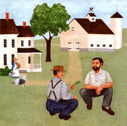

All of us who move to the country are trying to make successful new lives for ourselves. But I conjecture that some of us will fail because we don't hunker. . . and never learn how.
On one level, hunkering is the squatting-on-the-haunches posture assumed by many countryfolk outdoors, especially when there's something serious to discuss or ponder. But the art of hunkering goes far beyond physical posture to encompass tact, sensitivity, and all the other aspects of effective communication between human beings. And I believe that mastering this skill just might be the key to successful living in a rural area.
Say you need to know when to plant strawberries, how deep to sink a fence posthole, or the answer to any one of a thousand other day-to-day questions. No amount of reading-even in MOTHER-is going to provide you with all the information you need. Occasionally, you'll require on-the-spot aid and advice . . . and what better source is there than your neighbor who most likely met up with and solved the same problem 40 years ago?
OK, you're willing to ask for assistance. That's half the battle, but only half... because that man up the road is not an automated teaching device but a human being. And if he thinks you're nothing but an imported city slicker or stuck-up "foreigner" (who should have stayed where you came from), he won't lift a finger for you.
So my first suggestion is to rid yourself of any notion that you're "bringing yourself down to the level of the local people." True, you may be better educated, more widely traveled and perhaps even wealthier than your new neighbors. But you're the one going to them for help and advice, not the other way around. Their experience has made them experts at the kind of life you're seeking. You aren't lowering yourself in this interaction .. . you're just moving over toward the other fellow's position. I hope that point seems obvious to you. It took a devil of along time for me to learn it!
With that basic ground rule established, let's say you're approaching Ed Hopkins-the owner of the next farm over-with a specific problem: You need to know who owns the fence between your field and his. Although you might view your visit as a fairly straightforward errand, Ed sees the transaction in a somewhat different light. You need only some basic information, but he wants to know who you are, where you come from, what you're doing over there on the old McAllister place, and the identity of those other people living with you. That's the conversational small change he'll spend talking down at the store with his cronies . . . and that's part of the price you have to pay for what you want to know. It's no use bemoaning the infringement on your precious privacy. The "nosiness" of rural neighbors is inevitable. If you want perfect isolation, you might be able to get it in a warrenlike Manhattan apartment house, but you won't in the country.
So you find your neighbor in his driveway, fiddling with his hay baler . . . and, willy-nilly, you start getting your message across even before you open your mouth. The speed with which you walk up to him, the expression on your face, whether you're smiling or not, your posture, and the way you hold your arms all speak volumes about your intentions toward him. You can appear hostile and threatening-by closing the distance between Ed and yourself too rapidly-or you can be diffident and respectful in your advance. Bear down on your neighbor with a tense, clenched manner and you've created an atmosphere that makes it easy for him to dislike you. But draw near in a relaxed, easygoing, candid fashion . . . and you're in business.
You need to move in slowly and know when to stop (Ed's body language will tell you) to avoid his recoiling away from you. Also, take care not to be too aggressive when you look at your neighbor. Good communication calls for a frank, nonfurtive meeting of the eyes, but it's possible to have too much of a good thing. If you don't shift your gaze just before or just after Ed does, he'll regard your stare-at least on some subconscious level-either as insolence or as a downright threat.
If you think my description sounds a bit overdone, please recall one fact: Although the city person may have dozens of contacts with strangers every day, the country dweller may go for weeks without seeing anyone but family and longtime friends. What is a casual meeting for you may be an event for him or her.
Now, what do you say when you do open the conversation, and how do you say it? Chances are-rural communication systems being what they are-Ed already knows your name and something about you . . . but it won't hurt to introduce yourself with a smile and a "Good morning, Mr. Hopkins." (If you don't know his name, "sir" will do nicely.) Then you'll want to observe the universal rapport-breeding ritual of brief chitchat about the weather and the crops.
These preliminaries serve not only to break the ice but also to give you an idea of Ed's reaction to you and your approach. If he's sullen, cold, and defensive, you'll have to work on building a warmer climate before popping your question. On the other hand, if he's friendly and receptive, much of the work is done.
What judgment Ed will make of you will depend, at least in part, on how you talk during this meeting and those to come. Your voice needs to be low, slow, modulated, and friendly . . . not brisk or clipped. Also, although your natural tendency may be to ask your question and get out of there, this just can't be done in rural intercourse. If you're like me, you may have to continually force yourself to take your time about coming to the point, to slow your speech, and even to allow occasional silences. It seems to me-though I have no real evidence for my belief-that countryfolk are less upset than city dwellers by lapses in conversation, and they feel less need to fill the pauses with idle chatter.
Now what can be said about the point itself; that is, the phrasing of your question or request? Probably best is an indirect form that gives Ed an out and leaves him the option of helping you or not, rather than putting him into a situation he has to wiggle away from. Master such phrasing as "Say, I've been wondering how . . ." instead of "Do you know how . . ." and "Do you know anyone who might . . ." instead of "Will you. . ." When you use these graceful and considerate forms, Ed can back out easilyturn you down-without feeling like an ogre. In addition, he has the option of referring you to someone else better able to handle the problem if he's unwilling, or unable, to help you himself.
Moreover, your query or request ought to be just as specific and well thought out as you can make it. After all, your accent may be strange, your appearance distracting, and your question somewhat out of the ordinary. You want to avoid confusing Mr. Hopkins. There's nothing quite so pitiful as two people talking at each other when neither has anything but the haziest idea of what the other is driving at.
And don't be surprised if your neighbor prefers to transact business outside in good weather . . . probably hunkered down in the yard. After some practice the position is comfortable, and the conversation is less strained outdoors than it would be sitting stiffly in the parlor. When you find yourself quite automatically lowering yourself to your haunches and looking for something to do with your hands (twisting a piece of grass or baling twine, poking at the gravel, or maybe drawing designs in the dust with a stick), you're on your way to productive rural communication.
Finally, when you have the information you need, don't break off the contact abruptly as you might with a clerk or TV repairman. The code of rural neighborliness requires more than perfunctory conversation before taking leave. (And who knows but that you'll find out something you hadn't thought to ask?) This brings up the necessity for having contact with your neighbors at times when you don't need anything from them, just to be neighborly. You'll probably have to take the initiative for the first visits on yourself.
Eventually-if you're going about all this in the right way and the folks nearby come to like you as a person-you'll find yourself being tested in a friendly, nonmalevolent way. You may be invited to swallow a raw clam (as I was by French-speaking clam diggers in New Brunswick) or to try your hand at some demanding chore like tobacco stripping. The point here is not whether you "pass" or "fail" the test but whether you play the game with grace and goodwill. You may bungle the "job," but if you're willing to laugh at your own ineptness and not take your own dignity too seriously, you'll prove the stuff you're made of and come through the initiation in good style.
Finally, consider this summation of the art of hunkering written many years ago by Horace Kephart, a man who made a new life for himself among the people of the southern Appalachians:
Tact . . . implies the will and the insight to put yourself truly in the other man's place. Imagine yourself born, bred circumstanced like him. It implies,also, the courtesy of doing as you would be done by if you were in that fellow's shoes. No arrogance, no condescension, but man to man on a footing of equal manliness.
|
 |
|
|